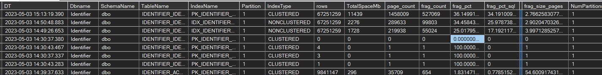
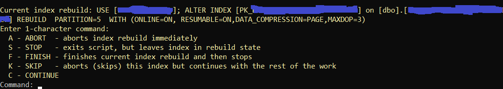

GentleRebuild is Powershell script for online index rebuild in
high-load clustered MSSQL databases working 24/7 - Enterprise Edition
is preferred, Standard Edition is supported with limitations.
Script executes ALTER INDEX ... REBUILD in a safe
controlled mode using 2 threads: one thread is executing the command while
second one is checking the environment for several conditions. What is
controlled:
- High CPU
- Too active index rebuild activity can overflow the LDF file -
transaction log backup could be not fast enough to flush the generated
log to the disk
- High index rebuild activity can fill AlwaysOn queues (Send and
Redo) above safe thresholds
- Or, despite the ONLINE option, rebuild can block other processes via
schema locks - in such cases script "yields", stopping it work
temporarily
- Controlled deadline time - deadline is a time when script should stop
(not to interfere with the other important processes running on a fixed
schedule)
- Exception list of tables and indexes - schemas named 'import', 'tmp',
tables named 'tmp_%' etc.
- Indexes which can't be rebuilt with the options RESUMABLE=ON
or even ONLINE=ON - such case indexes are skipped when size is
above the defined thresholds
- Limits the maximum duration of continuous index rebuild
- Limits the maximum size of indexes rebuild during a single run - in
case the amount of total space for transaction log backups is limited or
logs are used to roll over to STANDBY databases.
SQL server script
- Execute script FRG_install.sql on a "DBA" database.
In almost any environment there is dedicated "DBA" database - DBA,
SYSSYS, Optimization, names differ. In the worst case, if there is no
such database, use msdb.
- Execute procedure FRG_FillSizeStats to fill a table
with object list and sizes. This procedure usually finishes it's work it
few seconds
- Execute procedure FRG_FillFragmentation to analyze a
level of fragmentation. It could take up to a day to analyze 30-100Tb.
This is why powershell program doesn't analyze the fragmentation level
during it's run, but relies on the previously collected information.
First parameter of this stored procedure allows you to limit the
analysis by a single database. By default all non system databases are
analyzed.
- When script finishes the index rebuild, it updates the size and
fragmentation info using the stored procedure FRG_FillFragmentationOne.
Typically fragmentation level drops below the threshold, so on the next
run an index won't be affected
- Powershell script relies on the static previously collected
information, not on the actual fragmentation level NOW. (which can
gradually deteriorate after an analysis). This is why steps 2 and 3
should be executed again from time to time.
- Underlying tables keep all the history of sizes and fragmentation
levels, the last value can be selected from a view FRG_last:

Powershell Script parameters
When you run powershell script, supply a configuration file name as first
parameter, for example:
powershell .\GentleRebuild.ps1 param
where param.ps1 - is powershell files setting parameter variables inside.
Check config_example.ps1
All parameters in detail:
- Where and what to rebuild:
- server - server name (Integrated Security is
used, if you do need SQL login edit the ps1 file)
- dbname - Database name to defragement. You can
provide comma separated list. * means all non-system databases.
- workdb - DBA database (see above)
- threshold - fragmentation threshold in percent.
- extrafilter - Additional filter, which is applied
against FRG_last view. Useful filter examples:
- page_count>100 to skip tiny tables. Even after rebuild they
could be too fragmented because they don't have enough pages to
be completely populated
- TotalSpaceMb<1000000 - Skip huge indexes, they need extra
care.
- exceptions by SchemaName, Tablename, IndexName etc
- Reorganize - 0 or 1. use 1 for INDEX REORGANIZE.
- AllowNonResumable - size in Gb. If an index can't
be rebuilt using RESUMABLE=ON, an attempt is made to rebuild
it with ONLINE=ON. However, in that case process can't be
interrupted, and program can't yield to locks, unless killnonresumable=1
is specified. This is why index should be small enough. It
index size is bigger than that value it is skipped. Most HEAP
indexes fall into that category.
- AllowNonOnline - size in Gb. Some indexes can't
be rebuilt even using ONLINE=ON. Then they are rebuild
OFFLINE, locking other processes, and this process is not
interrupted unless killnonresumable=1 is specified. They
should be smaller than a threshold, or they are skipped. Obviously AllowNonOnline
should be even smaller than AllowNonResumable
- How to rebuild
- deadline - string in "HH:MM" format or an empty
string. If current time is greater than deadline, tomorrow time is
assumed. What deadline affects:
- If deadline is reached, and there are still indexes to work
on, process stops without starting a work on a next index
- If during a rebuild a projected time of completion (ETA) falls
behind the deadline, and when work is between 2% and 3% (not far
enough), then rebuild is terminated (using ABORT). However, it
doesn't guarantee that work would always finish before the
deadline, as process can slow down later. In such cases manual
intervention is required (check "interactive menu")
- If ETA is behind the deadline, the progress messages are
highlighted with yellow to attract an attention.
- rebuildopt - rebuild options for ordinary
indexes (CLUSTERED, NONCLUSTERED, HEAP). Don't use MAX_DURATION, use
chunkminutes instead. Don't use SORT_IN_TEMPDB: for
RESUMABLE it is not supported, for offline rebuilds there is a s
special parameter sortintempdb. Regarding MAXDOP:
- MAXDOP = 1 - slowly without much pressure on a server
- MAXDOP = 2 - normal work, recommended option
- MAXDOP = 4 - aggressive work
- It is not recommended to use MAXDOP>4, you will reach the
AlwaysOn limitations, and the process will be throttled
- Note: for some indexes MAXDOP is ignored and server uses 1-2
threads no matter what MADOP is.
- columnstoreopt - similar options for COLUMNSTORE
indexes (COLUMNSTORE index support is experimental)
- reorganizeopt - options for INDEX REORGANIZE
- relaxation - number of seconds process sleeps
when throttled by throttling conditions (LDF use size, AlwaysOn
queues, locking)
- maxcpu - percentage of the CPU for the last 10 minutes,
process is throttled if cpu is higher
- maxlogused - size in Mb used in log (LDF). When
used space is greater than this value, script stops (throttles) for
(relaxation) seconds and waits until the condition is cleared
(transaction log backup carries away log). Value 0 means 'don't
check'
- maxlogusedpct - Same but in percent to the total
size of transaction log. Value 0 means 'don't check. Typically one
of these 2 conditions is verified.
- maxqlen - Max size of AlwaysOn queues in Mb (log
send queue + redo queue) for all databases. If value is above the
threshold, process is throttled. To skip this check specify a very
high value
- maxdailysize - maximum work size of indexes
rebuilt in Mb. Condition is verified when work on a new index is
started. 0 means 'don't check'
- chunkminutes - similar to MAX_DURATION, but is
implemented using Powershell. 0 means no max duration, unless there
are throttling conditions. Time is counted since last throttling.
- killnonresumable - when 1, operations without RESUMABLE=ON
can be killed. You can increase values of AllowNonResumable
and AllowNonOnline in hope that no locks will be
detected during the operation (so value 1 is an optimistic
strategy).
- forceoffline - Enterprise edition works like Standard one,
all rebuilds are offline
- sortintempdb - for offline rebuilds only, size in Mb. if
index is smaller than that size, SORT_IN_TEMPDB=ON is used. It index
is too big (bigger than the value provided) it will be OFF.
Resumable and online rebuilds can't use this option.
- offlineretries - when rebuild is not resumable and killnonresumable=1,
index operation can be aborted when there are locks. Script will
retry the operation soon after. But after the specified number of
retries if would give up and skip this index
Interactive menu
By pressing Ctrl/C while script is progressing (not throttling) you enter
an interactive menu (might take up to 15 seconds for the menu to appear):

For non-resumable index rebuilds, option S - STOP is not available
For REORGANIZE, there is an extra option - R - stops and recalculates new
stats, because on REORGANIZE already done, then process goes to the nest
index in a list.
It displays the current rebuild command and waits for a single character
command. Don't leave it waiting for a command - it such state throttling
conditions are not controlled. After command 'S' you can change the
parameters and restart the script, it would continue from the same index.
However MAXDOP can't be changed once rebuild is started.
Additional comments:
- Script starts from smaller indexes and is progressing towards the
bigger ones
- Percentage is calculated based on the data in a table index_resumable_operations,
if operation is with RESUMABLE option. Otherwise, there is a rough
estimation based on the IO count vs page_count (rough estimation ... %).
For COLUMNSTORE percentage is calculated based on the number of
ROWSTOREs rebuilt.
- Sometimes after throttling the percentage doesn't increase and you
will see ETA: (unknown). SQL server is seeking for a place from where to
continue (rewinding effect). Sometimes it could take a long time
- You can check a global progress on a console title
- ETA for the global progress is calculated when at least 1% of the
total work is done
- Don't leave indexes in a suspended resumable state. SQL server still
has to track all the changes and some queries can run slower.
- Indexes in a stopped resumable state can fail over to another server,
and rebuild can continue on another server (!!!)
- To track changes for ONLINE indexes, SQL has to change execution plans
which update these table. In most cases there is only mild performance
degradation, but in few cases (with MERGE) the difference could be
dramatic
- Sometimes index rebuild can slow down processes even on unrelated
databases for unknown reasons. Throttling or chunkminutes solves
this problem. It is not known where the magic is, but looks like
Microsoft knows something and had invented MAX_DURATION for that reason.
- If you chose chunkminutes too small the rebuild performance
could suffer because of the "rewinding effect"
- COLUMNSTORE support is experimental.
- INDEX REORGANIZE is too slow for big tables (many Tb) and for
COLUMNSTORE as well, this is why I focus on REBUILD only.
Standard Edition: tips and tricks
- All throttling conditions are checked only between the operations,
when a new operation starts. Exception: when other processes are locked
and killnonresumable=1
- use killnonresumable=0 for "hard" defrag which ignores locks,
when you have a maintenance window (use deadline parameter as
well)
- you can benefit from setting sortintempdb value to make
rebuild faster, also you can increase MAXDOP to reduce the probability
of locks
- set offlineretries to skip "hot" indexes which can't be been
rebuilt without causing too much trouble
- the most important is defining the custom procedure VictimClassifier,
which allows you defide different categories for different connections,
and for each category to define how much it can wait for locks (for
example, job named XXX can wait for 1 hour, job YYY for 10 minutes,
other processes are interactive and process should yield immediately)
- progress indicator is available for nonresumable operations - even it
is not provided by SQL server, quite accurate estimation is done based
on other system counters
INDEX REORGANIZE: tips and tricks
- this operation is resumable as well, it works on Standard Edition, but
it is 3-5 time slows then INDEX REBUIILD on non-clustered indexes and up
to 20x on CLUSTERED
- there is some estimation of the percentage of the work done for
REORGANIZE, it is +/- 15% accurate in most cases
- sometimes the reorganized area hits the 'hot spot' where data is
inserted on a systems under heavy load, and REORGANIZE never ends. For
that reason if estimated percentage reaches 120%, process is terminated.
- reorganize is throttled the same way other operations. It can cause
locking - typically on schema locks.
Rebuild Log
Is saved into a table FRG_Log
Change Log:
v1.10
- Introducing custom throttle events. Works similar to all other
throttling conditions (logs, locks, AlwaysOn). For an idea check
function CustomThrottling
- New config parameter: killnonresumable: 0 (please add to
parameter file). When 1, operations without RESUMABLE=ON can be killed.
You can increase values of AllowNonResumable and AllowNonOnline
in hope that no locks will be detected during the operation (so value 1
is an optimistic strategy).
- Minor bug fix in FRG_FillFragmentationOne - please alter
procedure from FRG_install.sql file
v1.11
- maxcpu parameter and throttling based on cpu for the last 10
minutes.
- partial support of the Standard Edition - all operations are offline,
throttling is between operations only, with the exception of having
other processes locked. If killnonresumable=1, operation will be
aborted but will be retried offlineretries times.
- using forceoffline=1 you can force Enterprise Edition to work
as Standard one, all rebuilds will be offline
v1.12
- sortintempdb parameter uses SORT_IN_TEMPDB=ON if rebuild is
offline (option is not compatible with online and resumable operations),
and if index is smaller the value of sortintempdb (value in Mb).
For example, value 100000 means that indexes smaller than 100Gb would
use SORT_IN_TEMPDB=ON
- custom throttle events can now return values 1 (soft throttle, only
between operations, so indexes are not left in resumable state) and 2 -
hard, throttle immediately.
- custom throttle events and other throttling conditions affect offline
rebuilds only between the operations, exception are locking.
- quite accurate progress percentage estimation for non-resumable
operations
- sanity checks before run (that FRG_ tables exist and are populated)
v1.13
- VictimClassifier is used extensively on Standard Edition.
Kills rebuilds which lock other processes, when:
- victim process waits longer than limit, given by VictimClassifier
- victim process wait time + projected (estimated) rebuild time to
completion (based on percentage) will be longer than limit, given by
VictimClassifier
- but (in both cases) the percentage done is not behind "point of no
return", where rollback would take longer than completion. Depending
on the actual MAXDOP, it is 75%-50% (the higher MAXDOP, the lower the
point of no return)
v1.13
- 2 custom functions, CustomThrottling and VictimClassifier
are extracted into a separate file custom.ps1
v1.2
- Configuration file now is no longer JSON, but *.ps1. Reasons
- I do need comments in configuration file
- I do need multi-line strings (here-strings) for the filters.
- YAML is not natively supported by Powershell
v1.23
- new heuristics for INDEX REBUILD OFFLINE
v1.26
- index reorganize now supported with progress estimation
- use option $reorganize = 1
Check other projects: https://www.actionatdistance.com/